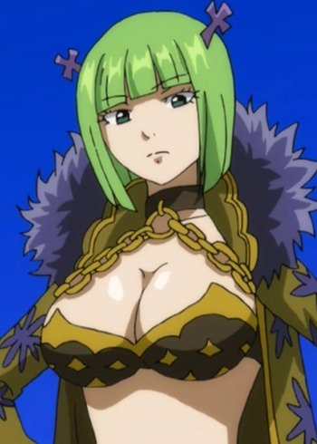
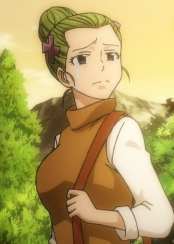
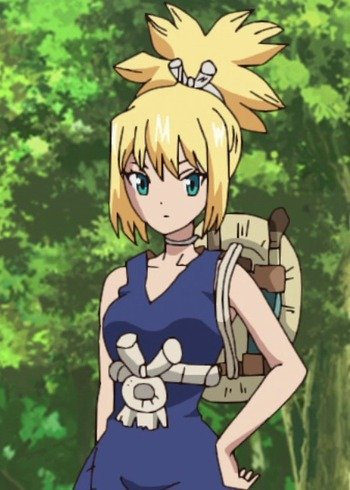

|  |
Brandish |
- Fairy Tail Movie 2: Dragon Cry
- Fairy Tail: Final Season
|
Brandish is a part of the Alvarez Empire and member of Spriggan 12, the protection guard of Emperor Spriggan. She looks very calm, but waspish attitude. She hates troublesome affairs and has shown a desire to avoid conflict. She shows no emotion in assassinating her enemies. Brandish can be manipulative and deceptive when need be. She can be michievous and playful at times. |
|  |
Grammi |
|
Grammi is a former servant of Layla Heartfilia and the mother of Brandish. She is a kind and reputable person. She treasured it Aquarius' keyand took care of it. |
|  |
Kohaku |
|
Kohaku is a young woman who is a descendant of modern humans in Ishigami Village. She is Ruri's younger sister and the daughter of Kokuyo. She is a kind young woman, caring for her older sister. Along with her kind personality, she has a hotheaded personality. She is called to gorilla because of her strength and physicallity. She has extremely fighting, hunting and survival skills. She is a tomboy, having no interest in feminine activies. Due to her instinct, she has a good judgement of character. |